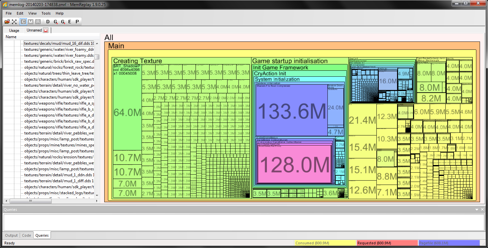

Overview
CRYENGINE has around 1,000,000 allocations that are active when a game is running. Furthermore, the total count of allocations and frees while playing a game is even higher.
Therefore, there there needs to be a solid method in order to visualize the multitude of memory access. MemReplay is a tool consisting of two major parts:
Chapters:
- The first part is built into the Engine code itself. When active (see Quickstart guide at the bottom of this document), it records every allocation and every free to disk
- The second part is a standalone application which analyzes the data to produce readable information, pretty graphs and tree maps
Example of MemReplay tool after loading 
MemReplay Features
MemReplay helps to detect hidden errors in handling memory which, in the worst case, causes the application to crash. It has the following main purposes:
- Finding expensive memory allocations which can lead to "Out of memory"
- Measuring per system/class memory usage
- Finding memory leaks
- Locating memory tramples
- Finding Double frees